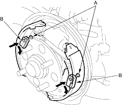
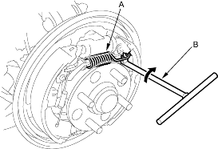

- Install the tension pins (A) and the retainer springs (B) by pushing in on each spring and turning each pin.

- Remove the brake drum (see page 18-24).
- Unhook the upper return spring (A) from the rearward shoe using a tool (B).

- Remove the tension pins (A) by pushing each retainer spring (B) and turning the pins.